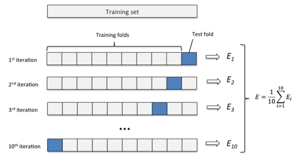

This is the last part of the series "End-to-end Machine Learning Porject with R". To see the first two parts of this series, click here: 1,2 .This tutorial covers:
This example uses the classic 1990 California Housing dataset and follows the instruction from O'Reily's "Hands-on machine Learning with Scikit-learn and Tensorflow", albeit in R code.
Now that you have got the data, explored and visualized it, transformed it appropriately and divided it into a training set and a test set, it becomes a lot easier to select and train your Machine Learning Algorithms.
Let's start with a fairly straightforward method: simple linear regression.
model_lm <- lm(median_house_value~., train_str)That looks simple. Let's see how our model performs when we apply on our training set and predict it again. A way to measure the perform of this regression task is to use a metric called Root-mean-square-error (RMSE). It is a frequently used measure of the differences between values (sample and population values) predicted by a model or an estimator and the values actually observed. The RMSE represents the sample standard deviation of the differences between predicted values and observed values. These individual differences are called residuals when the calculations are performed over the data sample that was used for estimation, and are called prediction errors when computed out-of-sample.
We can calculate the RMSE metric as follows:
predict_lm_train <- predict(model_lm, train_str)
sqrt(mean((train_str$median_house_value - predict_lm_train)^2)) #square root of sum of differences
# [1] 63464.64 It works, but not amazingly. To put in context, a RMSE error of 63,464 means that on average, the prediction error is around $63,434. If we go back to our dataset and notice how the median_housing_value mostly ranges from $200,000 to $500,000, prediction error could account to up to 30% of the actual value. This is called underfitting, where the predictors does not provide enough information or the algorithm is not powerful enough (which is likely to be the case here).
There are a couple of ways we can proceed:
For the purpose of this example, let us try different algorithms and see how it perform. I choose Decision Tree and Support Vector Machine Regression, both are very powerful and capable of detecting complex patterns in our dataset.
# Decision tree model
library(rpart)
model_decision_tree <- rpart(median_house_value~.,data = train_str, method = "anova", control = rpart.control(minsplit = 2, cp=0.001))
#make prediction
predict_decision_tree <- predict(model_decision_tree, train_str)
#calculate RMSE error
sqrt(mean((train_str$median_house_value - predict_decision_tree)^2))
# [1] 53320.74 # Support Vector Machine Regression model
library(e1071)
model_svm <- svm(median_house_value~.,data = train_str, cost = 10)
predict_svm <- predict(model_svm, train_str)
sqrt(mean((train_str$median_house_value - predict_svm)^2))
# [1] 50,342That looks good, using the Decision tree regression model and Support vector machine, we can reduce the internal residuals down to $53,320 and $50,342 respectively, significantly improving from the simple linear regression model in nominal value.
In fact, the two models perform well that we may run the risk of overfitting the data, which means that the algorithms learn so many features unique to the training set that it performs badly to new dataset.
How can we assess overfitting of a model, there are generally 2 methods:
Cross-validation is a technique to evaluate predictive models by partitioning the original sample into a training set to train the model, and a test set to evaluate it (sounds familiar, yes, it does borrow the idea from partitioning dataset into training/test set)
In k-fold cross-validation, the original sample is randomly partitioned into k equal size subsamples. Of the k subsamples, a single subsample is retained as the validation data for testing the model, and the remaining k-1 subsamples are used as training data. The cross-validation process is then repeated k times (the folds), with each of the k subsamples used exactly once as the validation data. The k results from the folds can then be averaged (or otherwise combined) to produce a single estimation. The advantage of this method is that all observations are used for both training and validation, and each observation is used for validation exactly once.
K-fold cross-validation and how it works. Image source: Sebastian Raschka
Sounds straightforward enough, let's perform a 10-fold cross validation technique to objectively assess the power of our 3 algorithms:
# randomly shuffle your data
cal_housing_copy <- cal_housing[sample(nrow(cal_housing)),]
#Create 10 equally size folds
folds <- cut(seq(1,nrow(cal_housing_copy)),breaks=10,labels=FALSE)
#Perform 10 fold cross validation
MSE_lm <- 0
MSE_tree <- 0
MSE_svm <- 0
for(i in 1:10){
#Segement your data by fold using the which() function
testIndexes <- which(folds==i,arr.ind=TRUE)
testData <- cal_housing_copy[testIndexes, ]
trainData <- cal_housing_copy[-testIndexes, ]
# fit in the models
lm_model <- lm(median_house_value~., trainData)
tree_model <- rpart(median_house_value~.,data = trainData, method = "anova",
control = rpart.control(minsplit = 2, cp = 0.001))
svm_model <- svm(median_house_value~.,data = trainData, cost = 10)
# make predictions
predict1 <- predict(lm_model, testData)
predict2 <- predict (tree_model, testData)
predict3 <- predict(svm_model, testData)
#update MSE
MSE_lm <- MSE_lm + sum(folds == i)/nrow(cal_housing_copy) * mean((predict1 - testData$median_house_value)^2)
MSE_tree <- MSE_tree + sum(folds == i)/nrow(cal_housing_copy) * mean((predict2 - testData$median_house_value)^2)
MSE_svm <- MSE_svm + sum(folds == i)/nrow(cal_housing_copy) * mean((predict3 - testData$median_house_value)^2)
}
sqrt(MSE_lm)
# [1] 63879.06
sqrt(MSE_tree)
# [1] 55583.9
sqrt(MSE_svm)
# [1] 52585.5So our performace using this technique is generally good, although not as great as when we only use the training set to evaluate the model. The good news is: now we know that in general, Decision Tree and SVM Regression performs significantly better than a simple linear regression. Now it's time to take them to the next level and make them even better by fine-tuning some hyperparameters.
Now that we have some promising models, we can enhance their performance by fine-tuning the hyperparameters associated with each model. From a technical standpoint, there are many ways you can do this:
Caveat: Tuning can take a really really long time to run (depending on your resources and algorithm). The code below only experiment 16 combinations for Decision trees and 12 combinations for Support Vector Machine and it still takes 13 hours for my poor CORE I5, 2GB RAM HP to compute. Lesson: get a good laptop or GPU if you want to do some serious machine learning work.
Advise: To do well in fine-tuning, it is important that you know what each hyperparameter does and set a range to try out appropriately. This means that it is in general very important to understand the mechanism behind each algorithms and what roles does each hyperparameters play. You can get away with treating ML algorithms as a blackbox and playing around but in the long run, you won't get really far with Machine Learning.
First, we try a set of parameters for Decision tree model. I decided to search through 2 hyperparameters: minsplit (5 different values) and cp (5 different values). This makes a total of 25 iterations of training and we will get the model that performs the best out of these 25 iterations.
#applying grid search
tuneResult1 <- tune.rpart(median_house_value~., data = train_str, minsplit = c(5,10,15, 20), cp = c(0.1,0.01,0.001,0.0001))
tune_tree <- tuneResult1$best.model #get the best model
#find RMSE value of the best model
predict_tree <- predict(tune_tree, train_str)
sqrt(mean((train_str$median_house_value - predict_tree)^2))
# [1] 40,282Let's try applying Grid search to SVM Regression. Here, I searched through 2 parameters: cost (4 different values) and gamma (3 different values), making a total of 12 iterations of training
#applying grid search
tuneResult2 <- tune.svm(median_house_value ~., data = train_str, cost=10^(-1:2), gamma=c(0.1,0,1))
tune_svm <- tuneResult2$best.model #get best model
#find RMSE of the best model
predict_svm <- predict (tune_svm, train_str)
sqrt(mean((train_str$median_house_value - predict_svm)^2))
# [1] 44,399That's impressive, we managed to further reduce RMSE of Decision Tree and SVM Regression to 40,282 and 44,399 respectively by fine-tuning the hyperpameters. Notice that this is up to 20,000 or 30% improvement from our naive linear regression model.
Now that we have seen which models or parameter combinations perform the best, we can test them on the test set and see how well our models predict new data. There's nothing really fancy about this. Just repeat the prediction and calculation of RMSE, this time on the test set.
Decision tree regression model:
predict_tree_final <-predict(tune_tree, test_str)
sqrt(mean((test_str$median_house_value - predict_tree_final)^2))
# [1] 51,070Support vector machine regressor:
predict_svm_final <- predict(tune_svm, test_str)
sqrt(mean((test_str$median_house_value - predict_svm_final)^2))
# [1] 51,061 So with an entirely new dataset, Decision Tree and SVM Regression still achieves RMSE of 51,070 and 51,061, not very far from our residual errors. This is good result in the sense that our model is robust enough for future projection.
Congratulations, you have completed the technical part of a challenging Machine Learning/Data Mining project. You are now ready to present your solutions to your clients (what you have learned, what works, what kind of assumption was made, what the final results are). If you are lucky and your models (or your presentational skills) were impressive and gets a thumps up, then you will start to think about scaling your solution for production. Now this is where the real fun begins, but until next time !!!
The entire Python script for this project can be found at my Github page.